这篇论文的宏观描述
基于神经网络计算 word embedding在多个下游领域的成功极大地激发了为长文本生成语义嵌入（semantic embeddings）的方法，比如句子、段落、文档。
直接生成长文本的embedding 的方法竟然被一种很简单的策略击败：
Wieting et al.(ICLR’2016)指出，这种复杂方法被超越了：采用 对已经的word embeddings做retraining, 结合logistic regression方法就可以达到这个目的。 在retraining的过程中需要结合一个外挂的数据库：paraphrase database(Gantikevitch et al., 2013)
本文的研究更进一步，显示出本文提出的完全无监督sentence embedding（句子嵌入）方法是一种强大的baseline
- 以现成的已经在大量无标签数据上（如：wikipedia）训练好的word embedding 为基础
- 通过一种对word embedding 加权平均的方式来表示句子，即：sentence embedding
- 对上述得到的“句子表示”（sentence embedding）稍作修改，用：PCA/SVD（当然也可以试试：autoencoder）
本文这种方法在文本相似任务中可以将性能提高：10%～30%。
超越了复杂的有监督模型入：RNN 和 LSTM本文的基本方法：
- 计算句子中词向量的加权平均
- 移除average vector 在 其 first principal component 方向的projection.
这里，一个词 w 的权重为 $\frac{a}{a+p(w)}$ 。 a 是一个参数，$p(w)$ 是 估计得到的词频（the estimated word frequency）. 这一项叫做 SIF–“smooth inverse frequency”.
- 针对每个句子，做前两部操作，从而得到所有句子的 sentence embeddings.
与其他模型、方法的渊源
与$TF-IDF$的关系
都是一种加权策略（weighting policy）, SIF 更是一种reweighing policy
$ tf-idf $ 是IR领域著名方法之一，将一个query or sentence 看作document并做了一下假设：
tf-idf: 解释一下 $ tf$ 和$idf$的意义。
- 一个词通常在一个query（sentence）中不多次重复出现。
- 一个document中term frequency可以表明一个词的重要程度。
- 一个term在corpus中所有document中被包含的次数，可以反应这个词的普遍性。
与word2vec的关系
- 在word2vec的基础之上，增加一个reweighting策略。
- word2vec被误认为是没有采用加权策略的，但实际上在深度研究其实现之后，发现word2vec隐式地采用了加权策略。而且不同于$tf-idf$ , 反而是和本文方法比较类似。
相关工作
Word embeddings
可以捕获词的lexcial and semactic features 。
可以用neural network model从文本的表示中获取
也可以从词共现统计的低秩近似来获得
- Random walk model for generating words in the documents.
我们的模型可以看作是：在这个模型中对隐变量的近似推理。
Long peices of text embeddings(Phrase/Sentence/Paraphrase) embedding
Coordinate wise operation
Unweighted average policy perform well in representing short phrase.
RecNNs
Based on a parse tree or not.
Latent vector assumption.
Le & Mikolov, 2014 assume that each paragraph has a latent vector, namely paragraph vector.
Skip-thought model
Taking advantage of another lexicon.(外挂词典或知识库)
Wieting et al., 2016 learnd paraphrastic sentence embeddings using:
- word averaging
- 基于paraphrase paris 的监督更新standard word embeddings.
- 在初始化和训练阶段都有supervision。
本文模型 - A simple method for sentence embedding
Brief introduction of the latent variable generative model for text.
Arora et al., 2016
该模型 将语料生成看做一个动态过程，且这一过程是由discourse vector $c_t\in R^d$ 的随机游走驱动的。
(Treats corpus generation as a dynamic process , where the $t$-th word is produced at step $t$，the process is driven by the random walk of $c_t\in R^d$.)
- Discourse vector $c_t\in R^d$ ，discourse vector 表示“（文本）正在讲什么？”
- Each word in the corpus has a word vector $v_w\in R^d$ , which is the latent variable of the model， and it’s Time-invariant.
- $c_t \cdot v_w$ : correlations between the discourse and the word.
$$
P_r[w \ enitted\ at\ time\ t|c_t]\propto exp(\langle c_t\,,v_w\rangle). (1)
$$
The discourse vector $c_t$ does a slow random walk, so that the nearby words are generated under similar discourses.
Slow means that $c_{t+1}$ is obtained from $c_t$ by adding a small random displacement vector.
结论
- 该随机游走模型（Arora et al., 2016）可以放宽约束条件：允许在$c_t$中有偶尔的、大步长的跳跃，计算表明这样对于词共现的概率影响可以忽略不计。
- 在一些合理假设之下，随机游走生成模型 与 word2vec 和 Glove等工作很像。
- ？？？
Our improved Random Walk Model
明显地，人们很容易将sentence embedding 按照如下方式定义：在给定一个句子的前提下，对控制这个句子的discourse vector 做一个MAP估计。
做一个假设：
- The discourse vector $c_t$does not change much while the words in the sentence emitted.
因此我们用一个单独的discourse $c_s$ 去代替句子 $s$ 中的所有 $c_t$’s .
In (Arora et al., 2016), it was shown that MAP estimate of $c_s$ is up to multiplication by scalar— the average of the embeddings of the words in the sentence.
Change the models as follows:
考虑到两种情况：1）一些词总是出现在context之外 2）一些常见词的出现与discourse无关。提出2种“smoothing term”
首先，引入一个additive term, $\alpha p(w)$ in the log-linear model.
$p(w)$ 是整个语料中词$w$ 的 unigram probability, $\alpha$ is scalar. 这就允许即使词向量与$c_s$ 的内积比较低的那些词也可以出现。
第二，我们引入一个 common discourse vector $c_0\in R^d$.
Serves as a correction term for the most frequent discourse that is often related to syntax.
Boosts the co-occurence probability of words that have a high component along $c_0$ .
给定了$c_s$ , 词$w$ 在句子$s$被射出的概率可以建模为如下形式:
$$
P_r[w\ emitted\ in\ sentence\ s\,|\,c_s]=\alpha p(w)+(1-\alpha)\frac{exp(\langle \hat c\,,v_w\rangle)}{Z_{\hat c_s} }
$$
$$
where\,,\hat c_s=\beta c_0+(1-\beta)c_s, c_0\perp c_s
$$
$$
and\,, Z_{\hat c_s}=\sum_{w\in \nu}exp(\langle \hat c_s\,,v_w\rangle)
$$
Our models allow a word $w$ unrelated to the discourse $c_s$ to be omitted for two reasons:
- by chance from the term $\alpha p(w)$
- if $s$ is correlated with the the common discourse vector $c_0$.
Computing the sentence embedding
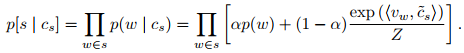
可以再表示为如下形式：
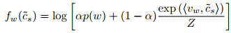
计算$f_w(\hat c_s)$对 $\hat c_s$的一阶偏导数：
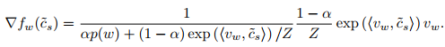
然后对上述梯度公式做Taylor展开：
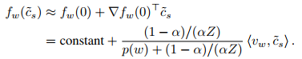
因此，$\hat c_s$的最大似然估计近似等于：
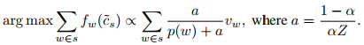
根据上述结果，可以有以下结论：
MLE 是一种对在句子中的词的词向量进行加权平均的近似。
注意到，对于频繁出现的词，权重$\frac{a}{a+p(w)}$ 会取一个比较小的值。因此很自然的对于频繁词（in the entire corpus）赋予一个比较低的权重。
为了估计$c_s$，通过 计算$\hat c_s$’s 的第一主成分(for a set of sentences)去估计$c_0 $
换句话说， 最终的sentence embedding 要减去所有 $\hat c_s$’s 对其第一主成分的投影。
这一过程总结在Algorithm 1 里，如下：
Algorithm 1 Sentence Embedding
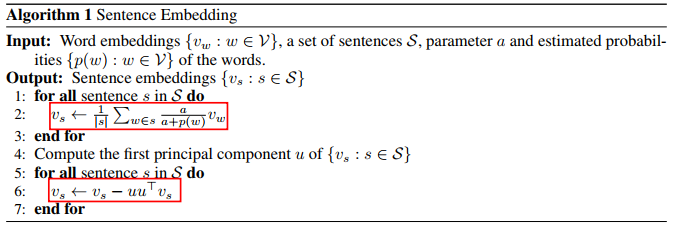
本工作与Word2Vec中的下采样概率有什么关联？
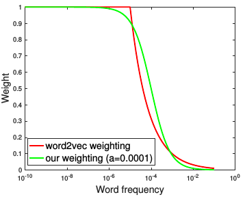
上图是在 Word2Vec 模型和我们模型中权重岁词频变化的曲线，可以看到两个模型中，权重与$p(w)$ 之间的关系十分相似。Word2Vec模型中， 梯度的期望是我们模型中估计得到的discourse vector 的一种近似。因此结论为：
- word2vec with sub-sampling gradient heuristic corresponds to a stochastic gradient update method for using our weighting scheme.
实验与结果分析
文本相似任务（Textual Similarity Tasks）
数据集：
- 22 textual similarity datasets including all the datasets from SemEval STS tasks(2012-2015). SemEval 2015 Twitter task, SemEval 2014 Semantic Relatedness task.
- 这些任务的目标是：预测给定的两个句子之间的相似度。
- 评测标准(Evaluation criterion): Pearson’s coefficient.
- 22 textual similarity datasets including all the datasets from SemEval STS tasks(2012-2015). SemEval 2015 Twitter task, SemEval 2014 Semantic Relatedness task.
实验设置. 采用以下设置来比较我们的模型与其他模型的优劣：
- 无监督学习
- ST
- avg - GloVe
- tfidf-GloVe
- 半监督学习
- avg - PSL. （from Wieting et al., 2015）
- 有监督学习
- PP & PP-proj.( from )
- DAN (Iyyer et al. 2015)
- RNN
- iRNN
- LSTM (Gers et al., 2002)
- 无监督学习
结果
各方法性能对比：
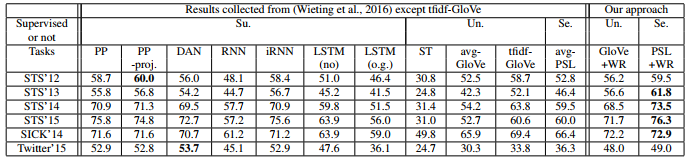
Better than LSTM and RNN.
Comparable to DAN.
上述三种方法均为有监督学习。
结论
- 本文提出的简单模型甚至优于highly-tuned的有监督的复杂模型。 采用tf-idf加权策略相比不加权方法性能也有所提升，但依然没本文模型效果好。
- 半监督方法 PSL+WR取得了6各任务中4个最好结果。
- 同时注意到，各数据集的 top singular vectors $c_0$ 似乎大略地相当于语法信息或者常用词，在SICK数据集中与$c_0$ 最接近的词是 “justt”, “when”, “even”,…, “while.”, etc.
- 最终，在附录中 我们证明了两个idea 都对性能提升做出了贡献： 对于 GolVe 向量， 单独采用ISF加权策略就提升了5%， 单独采用 common component removal 提升了 10%. 两者都用提升了 13%.
权重参数对于性能的影响
我们研究了我们的方法对于 权重参数、计算word vecotrs的方法、以及 对 估计的词的概率 $p(w)$ 这三者的敏感性。图如下：
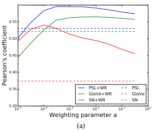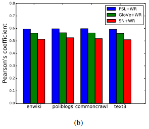
结论：
- 参数a 的范围在 $10^{-4} - 10^{-3}$ 之间，性能最佳。
- 固定a = $10^{-3}$ 的前提下，在四个数据集中对$p(w)$做估计，在测试中性能相当。
- 我们的方法可以被应用到多种语料、多种计算词向量的方法中，这也显示了我们的方法有助于跨越不同的领域。
有监督任务
采用我们方法得到的sentence embedding可以被当做特征而应用到下游的应用中。我们考虑了三种任务：
- SICK similarity task
- SICK entailment task
- SST binary classification task
方式如下：
- 固定 embeddings 而仅仅学习classifier. i.e., a linear projection (Kiros et al., 2015)
- 与 PP, DAM, RNN, LSTM等方法做了对比。
- 与 skip-thought 的方法做了对比（Lei Ba et al., 2016）
结果：
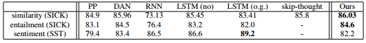
结论：
我们的方法better or comparable.
我们采用完全无监督方法得到的 sentence embedding 甚至好于DAN, RNN, LSTM等有监督训练所得的结果。
Skip-thought vectors 的维度比我们的高很多。
性能提升没有像在textual similarity tasks中那么显著。
原因可能是，在文本相似任务直接依赖cosine similarity, 而我们一处common components的做法比较符合cosine similarity的口味。而有监督任务中，标签提供了监督信息，使得分类器可以在监督之下挑选出有用的信息而忽略掉那些common的。
我们推测在情感分类任务中没有超越RNN 和 LSTM的原因是：
- 词向量，或者更加广泛地说 词义的分布式假设，由于反义词现象使得其对于捕获情感特征的能力受到制约。
为了解决这一方法，可以针对情感分析任务学习更好的word embeddings。比如：（Maas et al., 2011 & Duyu Tang et al., 2014）
- 在我们的权重平均策略中， 诸如 “not”等否定词被大大地减少了权重。但是在情感分类任务重，这类词很重要，显然应该赋予较高的权重。
针对具体的任务（情感分析），设计独有的加权策略（or 学习权重）
句子中的词序信息的作用
我们方法的一个有趣的特点是：它忽略了词序信息。 可是相较于RNN, LSTM 等可以潜在利用词序信息的方法，在这些benchmarks上我们却取得了better or comparable的方法，这就引出一个问题：
在这些benchmarks中，词序真的重要吗？
实际上，词序还真的重要。
通过实验证明：在有监督任务上，把句子中的词随机搅乱，然后再训练和测试 RNN and LSTM. 结果，性能下降很多。
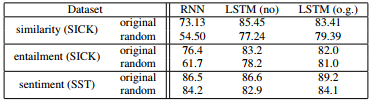
同时结合之前的发现：在有监督任务中，我们的方法- 忽略词序，但在两个任务中取胜，在一个任务中(sentiment analysis)性能低一些(但是比打乱词序之后的RNN 和 LSTM要好很多)。这就说明：
我们的方法一定在 exploiting semantics 方面强过 RNN and LSTM.
最后的最后
- 本文提供了一种简单的基于随机游走文本生成模型中 discourse vectors 获得sentence embedding 的方法。
- 它简单且无监督，性能优越，超过很多诸如：RNN 和 LSTM等方法。
- 其可用在下游任务中。
$$
Thank\,\,\,you\,\,\,for\,\,\, reading!
$$
论文中待进一步研究的概念
- first principal component (“common compinent removal”)
- what’s the exact meaning of latent variables?
- ramdom walk in text domain
- Maximum a posteriori (MAP)Estimation
- 复习Taylor级数单元，多元 变量。
- 补充Pearson’s coefficient 相关内容。
- MLE 和 MAP 在哪个Context 下，是指对参数的estimate。 值得深入研究。
- Perarson’s 系数简单了解一下，弄清原理和推论过程。
- log-linear word production model (from Mnih and Hinton)
强相关性论文
- Wieting et al., 2016
- Arora et al., 2016
- Lei Ba et al., 2016
- Bownman et al., 2015
- Kiros et al., 2015